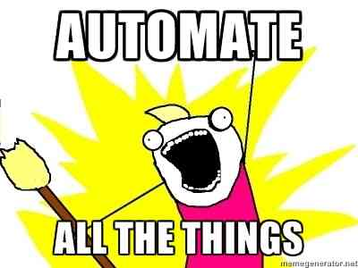

Kubestarter
All handles to get started!

whoami
- Fabian Met
- Infrastructure / DevOps engineer
- f.met@fullstaq.com
- github.com/fabianmet
- Specialize in kubernetes based deployments
Agenda
"Don’t anthropomorphize computers, they hate that" - David Wheeler- Kubernetes. But why?
- What is a Pod?
- Conception (CI build)
- Birth (deployment)
- Life (running in k8s)
- The environment
- Finding a mate (service discovery)
- Health
- Retirement and death
- How to reach pods
- Getting started
Kubernetes. But why?

Kubernetes. But why?
Machines acting up?

Kubernetes. But why?
The source of truth, the boss
Kubernetes. But why?
The apiserver

Kubernetes. But why?
The scheduler

Kubernetes. But why?
The workers
Kubernetes. But why?
The workers #2

What is a Pod?
What is a Pod?
Pods are not pets!
What is a Pod?
Unless they are....
What is a Pod?
Running instances of applications- Smallest schedulable unit
- One or more containers that share the namespace/are tightly coupled
- Ephemeral!
- Namespace?
- Shared memory (SHM)
- Volumes
- IP
- hostname
Pods
Containers follow standards
The Twelve-Factor AppBuild server
Overview
git push
- Run your tests
- Start docker build
- Push artifact to registry
- Notify deployment manager
- Automatic canary/feature deployment
- (Choose environment to deploy to)
Birth

Birth
Pods are born from:- Replication controllers
- Deployments (ReplicaSets)
- Cronjobs (Jobs)
- DaemonSet
- Statefulset
Pod
apiVersion: v1
kind: Pod
metadata:
name: debug
spec:
containers:
- command:
- sleep
- "86400"
image: alpine:3.10.2
name: alpine
Everything's just Pod templates

apiVersion: apps/v1
kind: Deployment
metadata:
name: debug
spec:
replicas: 3
selector:
app: debug
template:
metadata:
name: debug
labels:
app: debug
spec:
containers:
- command:
- sleep
- "86400"
image: alpine:3.7
name: alpine
Everything's just Pod templates
apiVersion: batch/v1
kind: Job
metadata:
name: jobname
spec:
template:
spec:
containers:
- name: jobname
image: alpine:3.7
command: ["sleep", "10"]
restartPolicy: Never
backoffLimit: 4
Pod life
The environment
Variables- Variables in PodSpec
containers:
- name: mycontainer
image: alpine:3.7
<...>
env:
- name: MY_ENVIRONMENT_VARIABLE
value: "value"
- name: AND_ANOTHER
value: "yup"
The environment
Variables- Variables in PodSpec from shared ConfigMap
containers:
- name: mycontainer
image: alpine:3.7
<...>
env:
- name: LOG_LEVEL
valueFrom:
configMapKeyRef:
name: ddyparams
key: loglevel
The environment
Variables- Variables in PodSpec from Secret
containers:
- name: mycontainer
image: alpine:3.7
<...>
env:
- name: DATABASE_URL
valueFrom:
secretKeyRef:
name: myapp
key: databaseurl
The environment
Variables- Variables in PodSpec from Downward API
containers:
- name: mycontainer
image: alpine:3.7
<...>
env:
- name: MY_POD_NAME
valueFrom:
fieldRef:
fieldPath: metadata.name
The environment
Variables- Load all key/value pairs from ConfigMap or Secret using envFrom
containers:
- name: mycontainer
image: alpine:3.7
envFrom:
- secretRef:
name: app-secrets
- configMapRef:
name: app-configs
The environment
Volumes- emptyDir
- hostPath
- secret
- GCEPersistentDisk
- AWSElasticBlockStore
- NFS
- iSCSI
- RBD
- CephFS
- Cinder
- VsphereVolume
The environment
Kubernetes default serviceaccount
~ # ls -al /var/run/secrets/kubernetes.io/serviceaccount
total 0
drwxrwxrwt 3 root root 140 Sep 24 14:26 .
drwxr-xr-x 3 root root 27 Sep 24 14:26 ..
drwxr-xr-x 2 root root 100 Sep 24 14:26 ..9989_24_09_14_26_34.196016358
lrwxrwxrwx 1 root root 31 Sep 24 14:26 ..data -> ..9989_24_09_14_26_34.196016358
lrwxrwxrwx 1 root root 13 Sep 24 14:26 ca.crt -> ..data/ca.crt
lrwxrwxrwx 1 root root 16 Sep 24 14:26 namespace -> ..data/namespace
lrwxrwxrwx 1 root root 12 Sep 24 14:26 token -> ..data/token
Health checks

livenessProbe:
httpGet:
path: /health
port: 80
initialDelaySeconds: 120
timeoutSeconds: 1
periodSeconds: 10
successThreshold: 1
failureThreshold: 3
Readiness checks
readinessProbe:
httpGet:
path: /ready
port: 80
initialDelaySeconds: 120
timeoutSeconds: 1
periodSeconds: 10
successThreshold: 1
failureThreshold: 3
Also:
exec
tcpSocket
Classed society
- QoS (CPU & memory)
- Requests
- Limits
- RBAC
- NetworkPolicy (distributed firewall)
- Ingress
- Egress
Death
Death
Better known as "pod termination"- Containers in a Pod live and die together
- Configurable "grace period" (get your affairs in order for a clean exit)
Termination
He died doing what he loved.. serving users..- Retirement
- Node maintainance/swapout
- OOMkiller ☠
- "Natural causes" ☠
"Patterns for Composite Containers"
Sidecar
"Extend and enhance"Sidecar
"Extend and enhance"Sidecar
"Extend and enhance"Adapter
"Normalize and abstract"
Adapter
"Normalize and abstract"Adapter
"Extend and enhance"Get our hands dirty!!
$ kubectl run nginx --image=nginx --replicas=1 --port=80
$ kubectl expose deployment nginx --port=80 --target-port=80 --type=LoadBalancer